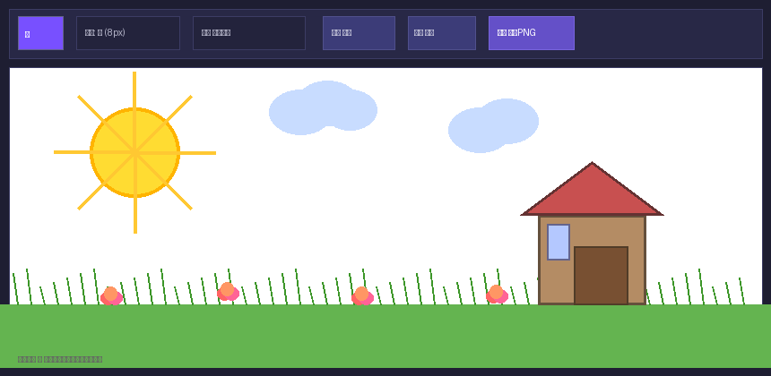
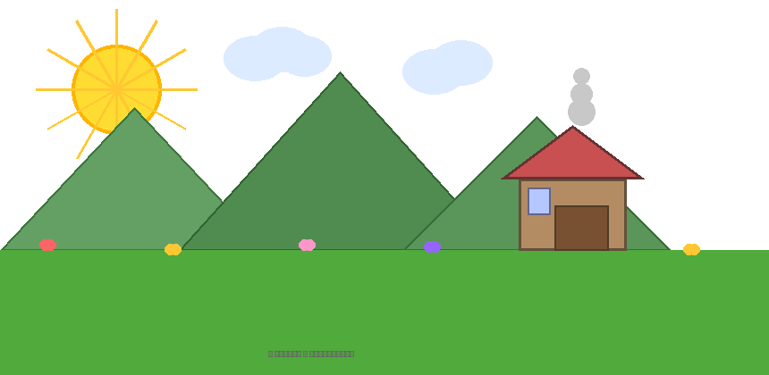
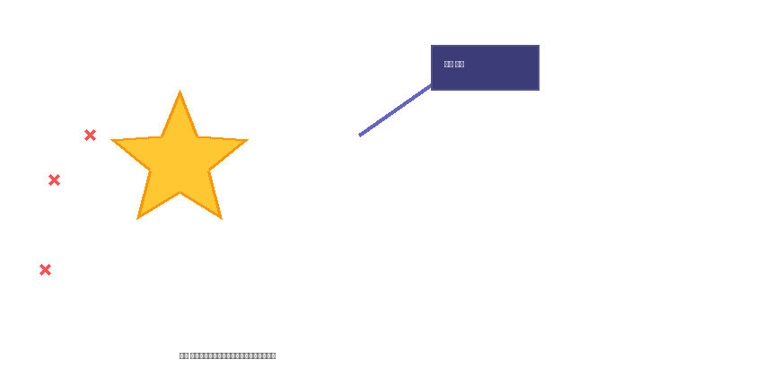
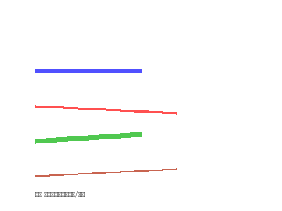
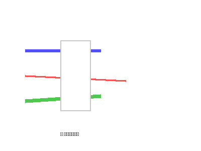
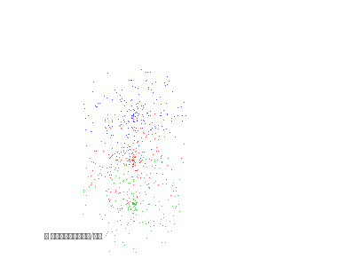

想随手画个草图，但手边没有纸笔？想给图片加个手绘标注，但不会用Photoshop？或者只是想带孩子涂涂画画，又不想买实体画板？
在线涂鸦画板 就是帮你解决这些问题的。它就像一个永远摆在面前的电子白板，打开浏览器就能画——支持普通画笔、橡皮擦、喷枪三种模式，颜色和笔画粗细随意调，画错了可以撤销，画好了可以一键下载为PNG图片。
而且全程在浏览器里运行，不需要装软件，不需要注册账号，完全免费。数据不上传服务器，隐私安全。
进入 ToolBox 首页，点击「趣味工具」分类，找到「涂鸦画板」工具卡片。工具的界面简洁明了：
默认是粗笔+紫色，打开就能上手画。

涂鸦画板提供了三种完全不同的笔触模式，可以应对各种绘画场景：
最基础的绘制模式。选择颜色和粗细后，按住鼠标左键在画布上拖动即可画出流畅的线条。支持 4 种粗细：
| 粗细档位 | 像素值 | 适合场景 |
|---|---|---|
| 细 | 2px | 精细勾勒、写字、小图细节 |
| 中 | 4px | 日常涂鸦、标注、草图 |
| 粗 | 8px | 粗线条、卡通风格、大面积填充 |
| 极粗 | 16px | 粗犷风格、标题大字、涂色 |
切换到橡皮擦模式后，在画布上涂抹即可擦除之前画的内容。橡皮擦的大小和当前选中的画笔粗细一致——选「极粗」模式擦得最快，选「细」模式可以精细擦除。
喷枪模式会以光标为中心，在周围随机散布颜料点，形成类似喷漆罐的雾状效果。笔触越粗，喷散范围越大。非常适合做渐变、阴影和特效。
不用追求一步到位。先画几个简单的图形练练手：
画错了不用慌——点击「撤销」可以回退到上一步，最多支持 30 步撤销。

涂鸦画板内置了完整的撤销系统：
这让你可以放心大胆地尝试各种画法——不满意就撤销，撤销到满意为止，或者直接清空重来。

画好之后，点击「⬇️ 下载PNG」按钮，当前画布上的所有内容会被保存为一张 PNG 图片，自动下载到你的电脑。
下载的图片特点：
下载后的图片可以发朋友圈、插入文档、做PPT素材、当头像……怎么用都行。



Q：画板支持手指触摸画吗？
支持！涂鸦画板同时支持鼠标和触控，在手机/平板/触摸屏上直接用手指就能画，体验和真画板一样自然。
Q：能保存图片到手机相册吗？
点击「下载PNG」后，手机会自动弹出保存对话框选择保存位置，或直接下载到文件管理器。不同手机系统操作略有差异，但都支持。
Q：画板的画布多大？能调整吗？
画布大小自适应浏览器窗口宽度，高度固定400px。下载时按设备分辨率输出高清图，适合大多数使用场景。
Q：可以和 Paper / Sketchbook 媲美吗？
涂鸦画板是一个轻量级的在线工具，功能对标 Paper 和 Sketchbook 的基础绘图能力。它胜在无需安装、完全免费、隐私安全。专业绘画建议使用 iPad + Apple Pencil 配合专业软件。
📌 还没试过？现在就去打开涂鸦画板，随手画点什么吧
🎨 去涂鸦画板 →